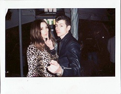
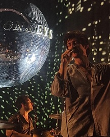

[VERSE 2]
Arabella's got a '70s head
But she's a modern lover, it's an exploration
She's made of outer space
And her lips are like the galaxy's edge
And her kiss the colour of a constellation
Fallin' into place

[CHORUS]
My days end best when the sunset gets itself behind
That little lady sittin' on the passenger side
It's much less picturesque without her catchin' the light
The horizon tries but it's just not as kind on the eyes
As Arabella, oh
As Arabella
[POST-CHORUS]
Just might've tapped into your mind and soul
You can't be sure

[BRIDGE]
(That's magic) In a cheetah print coat
(Just a slip) Underneath it, I hope
(Asking if) I can have one of those
(Organic) Cigarettes that she smokes
(Wraps her lips) 'Round a Mexican Coke
(Makes you wish) That you were the bottle
(Takes a sip) Of your soul, and it sounds like
[OUTRO]
Just might've tapped into your mind and soul
You can't be sure